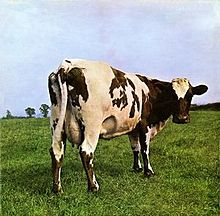

Morrison and EMI producer Norman Smith negotiated Pink Floyd's first recording contract. As part of the deal, the band agreed to record their first album at EMI Studios in London. Mason recalled that thesessions were trouble-free. Smith disagreed, stating that Barrett was unresponsive to his suggestions andconstructive criticism. EMI-Columbia released The Piper at the Gates of Dawn in August 1967. The Signing with EMI The Piper at the Gates of Dawn album peaked at number 6, spending 14 weeks on the UK charts. One month later, it was released under the Tower Records label.
-
1967: The Piper at the Gates of Dawn
- Astronomy Domine
- Lucifer Sam
- Matilda Mother
- Flaming
- Pow R. Toc H.
- Take Up Thy Stethoscope and Walk
- Interstellar Overdrive
- The Gnome
- Chapter 24
- The Scarecrow
- Bike
-
1968: A Saucerful of Secrets
A Saucerful of Secrets is the second studio album by the English rock band Pink Floyd, released on 29 June 1968 by EMI Columbia in the United Kingdom and on 27 July 1968 in the United States by Tower Records. During recording, the mental health of singer and guitarist Syd Barrett declined, so David Gilmour was recruited to complement him; Barrett left before the album's completion. While Pink Floyd's debut album, Piper at the Gates of Dawn (1967), had been driven by Barrett as the band's leader and principal songwriter, A Saucerful of Secrets drew more diverse influences, with every member contributing songwriting and lead vocals. Gilmour appeared on all but two songs, while Barrett contributed to three."Set the Controls for the Heart of the Sun" is the only song on which all five members appeared together. A Saucerful of Secrets reached number nine in the UK charts, but did not chart in the US until April 2019, peaking at number 158. The album received mostly positive reviews, though many critics have deemed it inferior to The Piper at the Gates of Dawn.
- Let There Be More Light
- Remember a Day
- Set the Controls for the Heart of the Sun
- Corporal Clegg
- A Saucerful of Secrets
- See-Saw
- Jugband Blues

-
1969: More
More is the third studio album and first soundtrack album by English rock band Pink Floyd. It was released on 13 June 1969 in the United Kingdom by EMI Columbia and on 9 August 1969 in the United States by Tower Records. The soundtrack is for the film of the same name, which was primarily filmed on location on Ibiza and was the directorial debut of Barbet Schroeder. It was the band's first album without former leader Syd Barrett. The album was a top ten hit in the UK, but received mixed reviews. Several songs became live favourites over the following years. Like other Pink Floyd albums, it has been reissued on CD with additional material and outtakes.
- Cirrus Minor
- The Nile Song
- Crying Song
- Up the Khyber
- Green Is The Colour
- Cymbaline
- Party Sequence
- Main Theme
- Ibiza Bar
- More Blues
- Quicksilver
- A Spanish Piece
- Dramatic Theme

-
1969: Ummagumma
Ummagumma is the fourth studio album by English rock band Pink Floyd. It is a double album and was released on 7 November 1969 by Harvest Records. The first disc consists of live recordings from concerts at Mothers Club in Birmingham and the College of Commerce in Manchester that contained part of their normal set list of the time, while the second contains solo compositions by each member of the band recorded at Abbey Road Studios. The artwork was designed by regular Floyd collaborators Hipgnosis and features a number of pictures of the band combined to give a Droste effect. It was the last album cover to feature the band. Although the album was well received at the time of release, and was a top five hit in the UK album charts, it has since been looked upon unfavourably by the band, who have expressed negative opinions about it in interviews. Nevertheless, the album has been reissued on CD several times, along with the rest of their catalogue.
- Astronomy Domine (live)
- Careful with That Axe, Eugene (live)
- Set the Controls for the Heart of the Sun (live)
- A Saucerful of Secrets (live)
- Sysyphus (Parts 1-4)
- Grantchester Meadows
- Several Species of Small Furry Animals Gathered Together in a Cave and Grooving with a Pict
- Careful with That Axe, Eugene
-
1970: Atom Heart Mother
Atom Heart Mother is the fifth studio album by the English progressive rock band Pink Floyd. It was released by Harvest on 2 October 1970 in the UK, and by Capitol on 10 October 1970 in the US. It was recorded at Abbey Road Studios in London, England, and was the band's first album to reach number 1 in the UK, while it reached number 55 in the US, eventually going gold there. A remastered CD was released in 1994 in the UK and the United States, and again in 2011. Ron Geesin, who had already influenced and collaborated with Roger Waters, contributed to the title track and received a then-rare outside songwriting credit. The cover was designed by Hipgnosis, and was the first one to not feature the band's name on the cover, or contain any photographs of the band anywhere. This was a trend that would continue on subsequent covers throughout the 1970s and beyond. Although it was commercially successful on release, the band, particularly Waters and David Gilmour, have expressed several negative opinions of the album in more recent years. Nevertheless, it remained popular enough for Gilmour to perform the title track with Geesin in 2008.
- Atom Heart Mother
- "Father's Shout
- "Breast Milky"
- "Mother Force"
- "Funky Dung"
- "Mind Your Throats Please"
- "Remergence"
- If
- Summer '68
- Fat Old Sun
-
Alan's Psychedelic Breakfast
- "Rise and Shine"
- "Sunny Side Up
- "Morning Glory"

- Atom Heart Mother